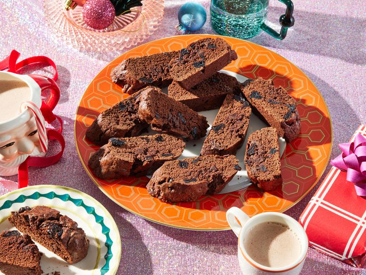

Double Chocolate Biscotti with Cherries

Savory cookies
Chocolatey cookies! Tasty and look nice.
Ingredients
- 1/2 cup sugar
- 1/2 cup salted butter
- 3 eggs
- 1 3/4 flour
- 1/2 cup coca powder
- 2 teaspoons baking powder
- 1/2 cup dark chocolate chunks
- 1/2 cup candied cherries
Steps
- Preheat the oven to 190 degrees C. Line a high-rimmed baking sheet with parchment paper.
- Combine softened butter and sugar in a large bowl and beat with an electric hand mixer until creamy. Beat in eggs and vanilla extract until well combined.
- Add flour, coca and baking powder. Mix. Then stir in chocolate chunks and candied cherries.
- Split dough in half and shape into rectangular logs, about 8x2x1 inch in size. Place on the prepared baking sheet.
- In a small bowl, whisk together egg and water and brush the tops of the logs with the egg wash.
- Bake 20 minutes.
- Slice logs into 1 inch slices diagonally with a serrated knife. Arrange slices on the baking sheet on their sides.
- Bake 10 minutes at 190 degrees C, turn and then bake 10 minutes.